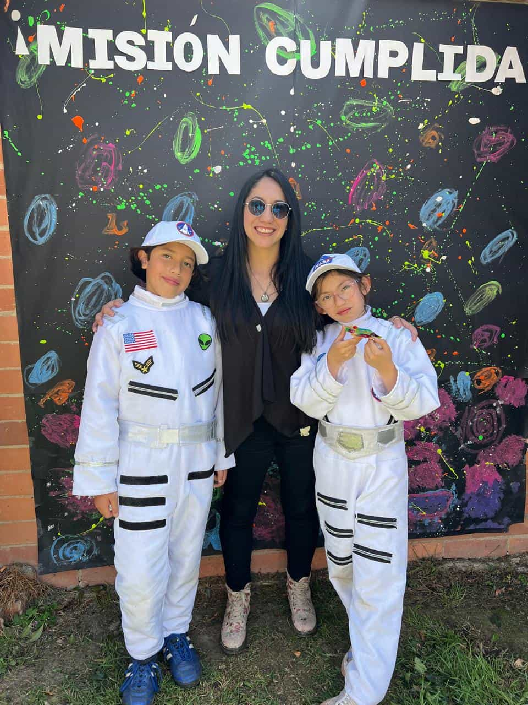
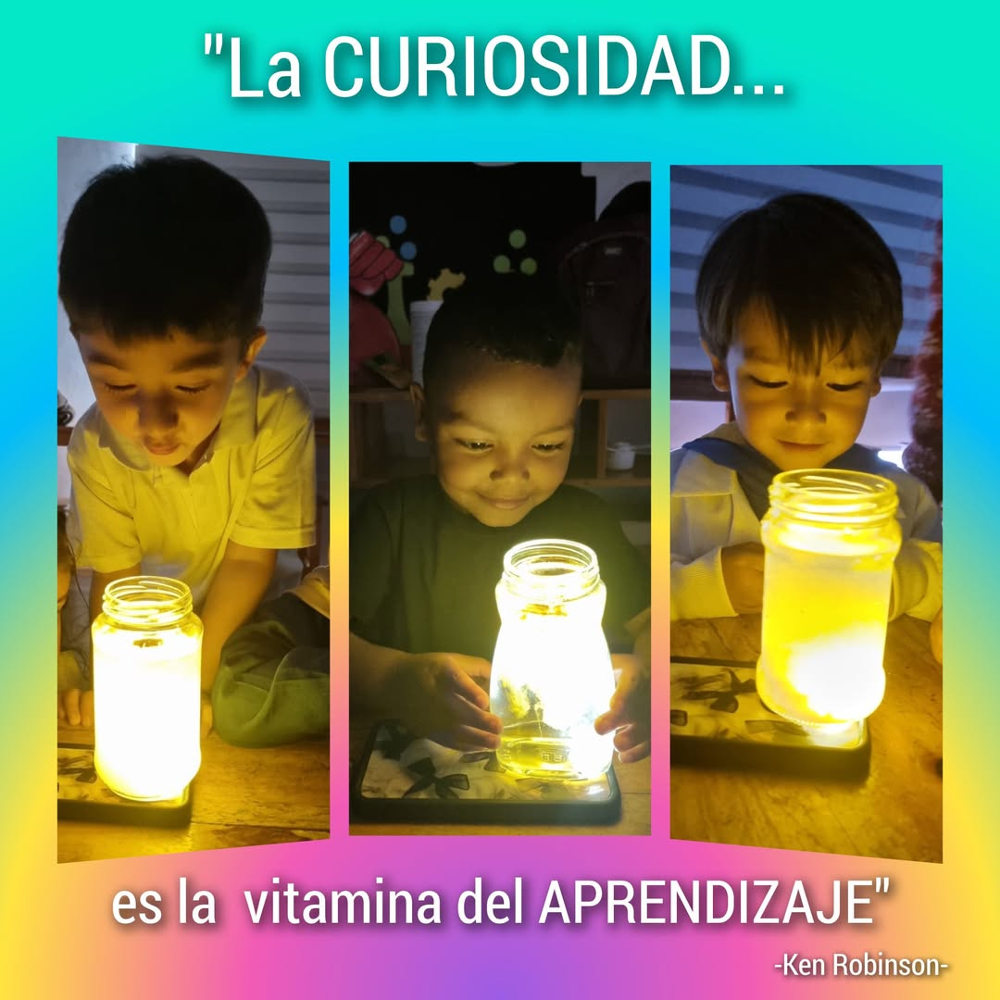
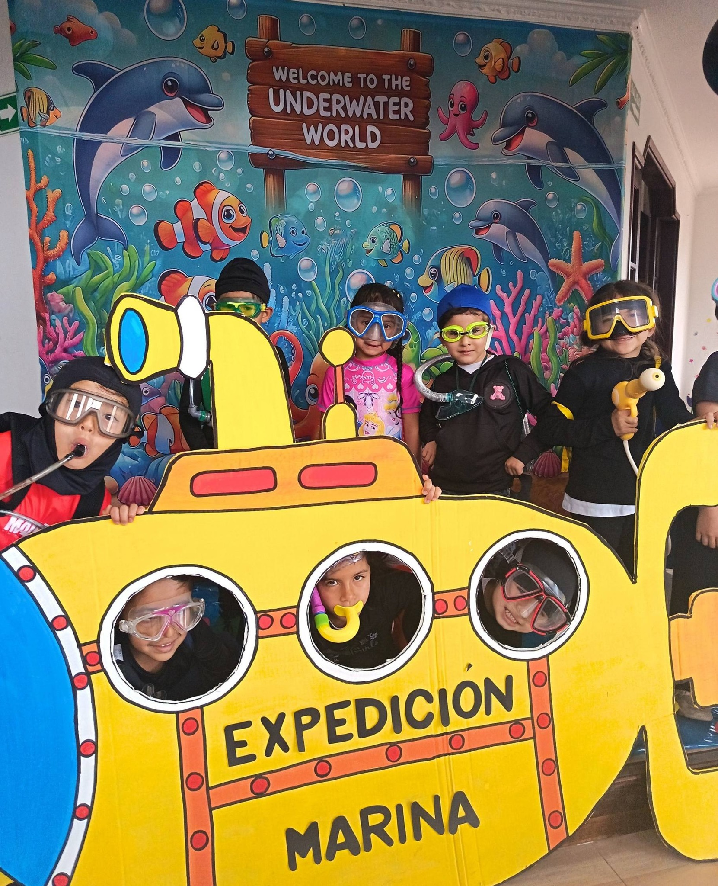
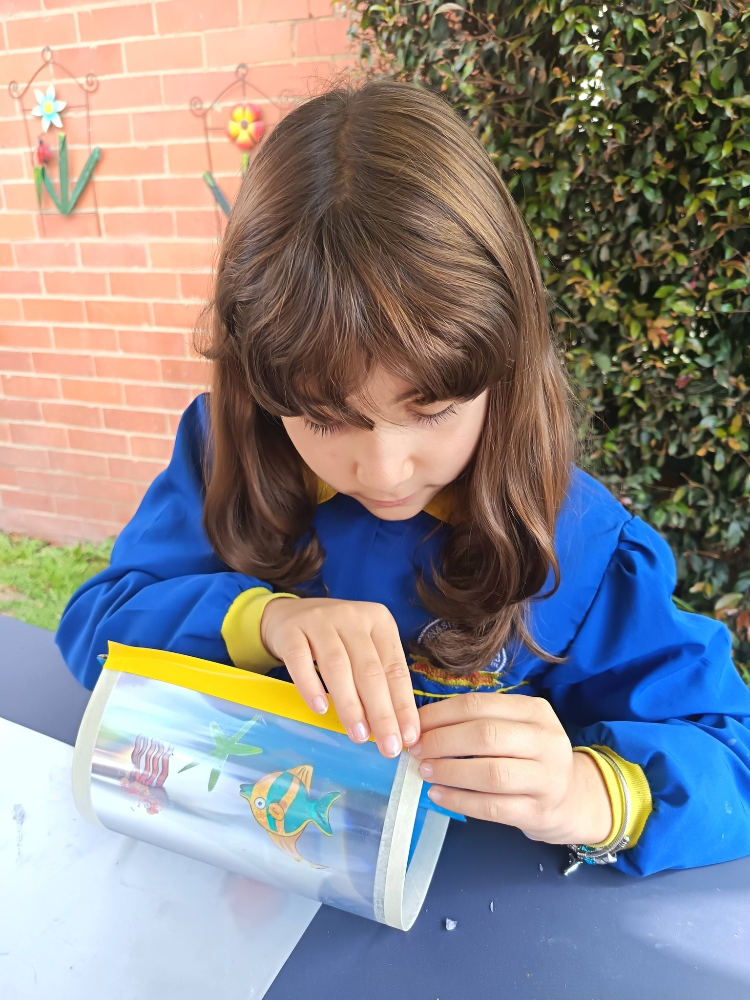
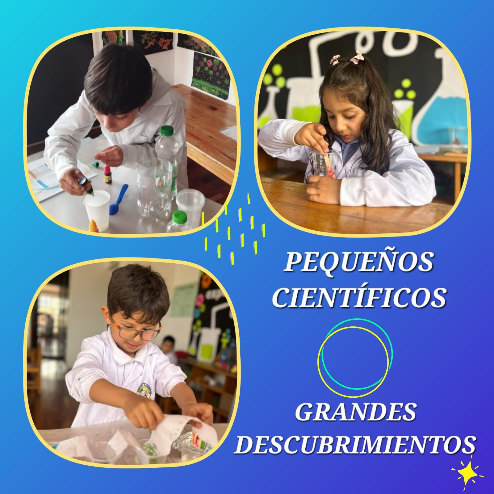

Nurturing Curiosity, Building Futures
Located in the heart of Cajicá, our school provides a unique environment where Montessori principles meet a deep respect for nature. We empower children to explore, discover, and grow into compassionate leaders.

Why Choose Marcello IAFrancesco?

Pedagogical Excellence
Our method focuses on student-led discovery, ensuring that curiosity stays alive throughout the learning journey. We follow the rhythm of each child.

Innovative Environment
From artistic expression to scientific exploration, we make learning an adventure through creative play and modern tools designed for discovery.

Values-Based Education
We believe in building character through kindness, responsibility, and community engagement, fostering a sense of belonging and respect for others.

A Campus Designed for Discovery
Our "Campestre" location in Cajicá is more than just a school; it's a living laboratory. With wide-open green spaces and specialized Montessori environments, your child will thrive in harmony with nature.
"The environment must be rich in motives which lend interest to activity and invite the child to conduct his own experiences." - Maria Montessori